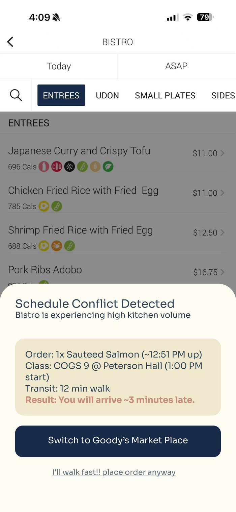
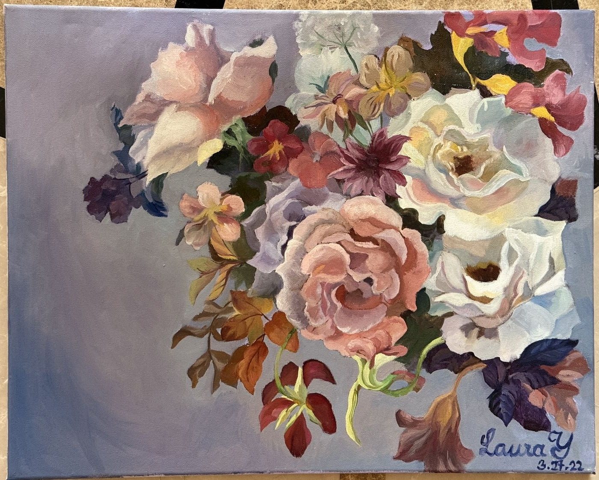
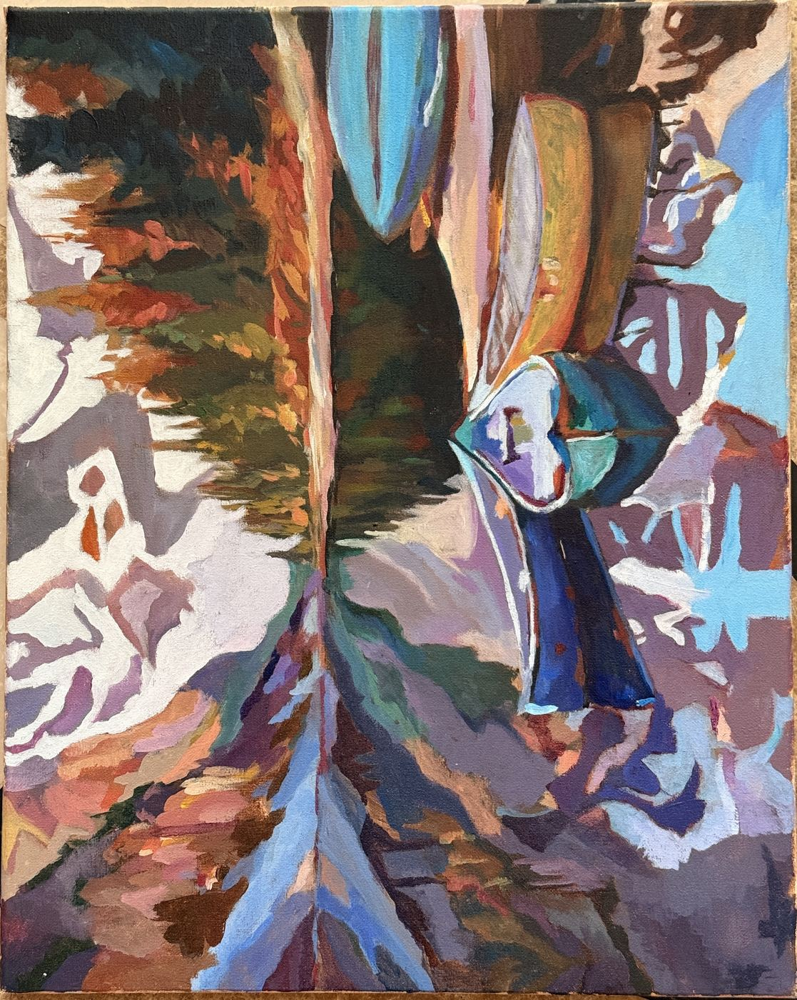
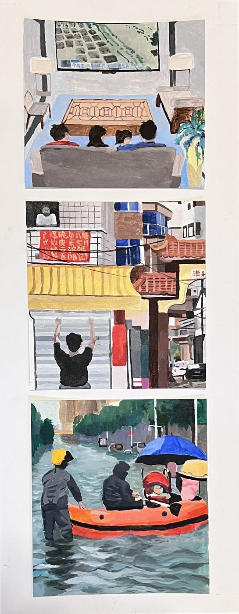
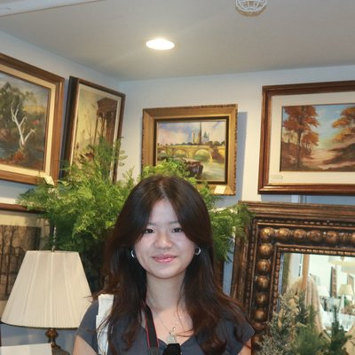

Selected work
Ocean Pulse
Interactive dashboard for California Current ocean ecosystem health — designed for non-technical users to explore 70 years of ocean data and AI-generated policy recommendations.
Background Noise
Active learning pipeline for bird species classification from audio, with the San Diego Zoo. The interesting part turned out to be catching the model cheating.
The 30-Minute Lie
Campus dining apps optimize for checkout conversion. I redesigned the ordering flow around a different problem: not making students late to lecture.
I noticed this myself before I noticed it as a design problem: the wait time estimate at the Bistro is basically a guess. It treats a cold side dish and a hot wok entree as the same prep time, even though only one of them is bottlenecked by an actual burner. So I started dropping my class schedule in as an .ics file and built a version of the app that warns you before you pay, not after you're already standing outside in the cold wondering where your food is.

Experience
SmartCloud Network Engineer Intern · China Telecom
I'm interning across China Telecom's city headquarters cloud division, and I'm using the time to figure out how a big state carrier actually runs, from the customer-facing side all the way to the technical backend. Along the way I built a reusable slide-generation tool on the internal TeleAgent platform, mostly as a way to learn the product by hand. It has a content-traceability check that catches the model making up facts before a deck goes out, and I got into the habit of checking every change against the slides it actually rendered instead of taking the agent's word that it worked. I put together its on-demand "skills" setup by trial and error to keep the context window from overflowing, and a company training later taught that same idea as a core concept, which was a nice moment of building something first and finding out afterward why it worked. Most of the cloud business is government and enterprise clients, the kind who care a lot about the security a state carrier can promise.
云中台 · 交付
The middle layer at HQ that connects customer solutions to the technical backend. I sit with delivery, so onboarding customers and handling maintenance after they buy, and I join pre-sales on customer visits when they head out.
See more details销售大厅 · front end
The all-product, all-customer sales front, wider than the cloud team's government and enterprise focus. I rotate in soon.
See more details监控中心 · back end
The technical backend that watches for system faults, from cybersecurity to power to fiber, and decides what gets fixed automatically versus what needs a person.
See more detailsArt









About

Hi, I'm Laura — first-year at UCSD, equally happy in front of a Jupyter notebook or a canvas. This site is where both sides live.
Currently
Student researcher at Engineers for Exploration (UCSD), building ML pipelines for bioacoustic species classification in collaboration with the San Diego Zoo.
Background
I came to HCI through data science — building dashboards and realizing that good data and good design are inseparable problems. Also a practicing visual artist.
Education
B.S. Data Science, minor in Cognitive Science — UC San Diego, class of 2029.
Looking for
HCI research opportunities and design collaborations where data and human experience intersect.
Comfort level